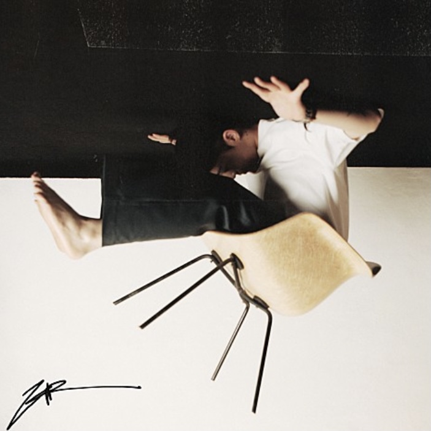

♥ 기리보이 ♥
- 출생 : 1991년 1월 24일 (도봉구 방학동)
- 데뷔 : 2011년 디지털 싱글 you look so good to me
- 소속 : 저스트뮤직(부사장), WEDAPLUGG RECORDS(대표), 14P(대표)
< 내가 좋아하는 기리보이 노래 >

← 사랑이었나봐 ♬
- 앨범 : 9컷
- 발매 : 2020년 12월 23일
- 장르 : 힙합(국내)
- 작곡 : 기리보이, johnny, chiic
- 작사 : 기리보이
- 편곡 : johnny, chiic
♬ 을 →
- 앨범 : 치명적인 맛보기 2곡
- 발매 : 2019년 11월 9일
- 장르 : 힙합(국내)
- 작곡 : 기리보이, johnny, 서동현
- 작사 : 기리보이, 서동현
- 편곡 : johnny